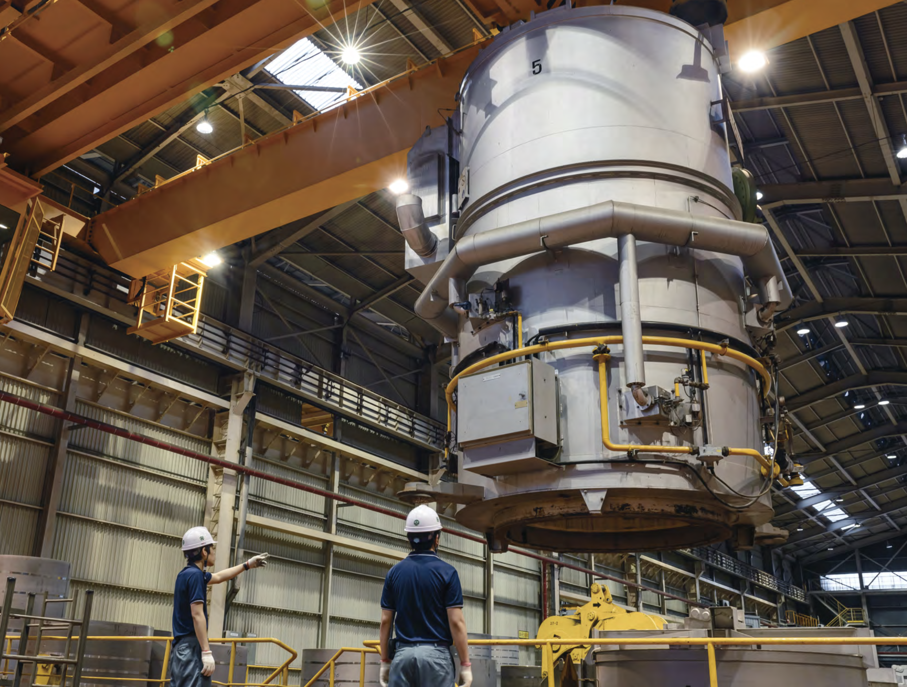
안전보건 방침
동국산업은 인간 존중의 경영이념을 바탕으로 전 임직원의 건강과 안전하고 쾌적한
작업환경 조성 및 재해 예방을 위해 모든 임직원이 상호 협력하여 스스로의 안전과 동료를
보호하는 데 최선을 다하기 위하여 다음과 같이 안전보건 경영방침을 실천한다.
목표 및 실천방안
위험성 평가 활성화
임직원 전원 참여 PATROL 활동
관리감독자 작동성 활성화
안전 교육장 및 건강 관리실 운영

근골격계 질환 정기적 모니터링
임직원 및 가족
건강진단 및 의료비 지원
안전 조직도
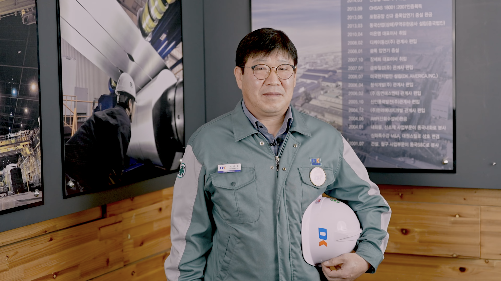
안전보건총괄팀 박종결 팀장
높은 온도, 무거운 기계, 화학 물질 등 다양한 위험이 동반되는 작업 환경에서 더욱 안전의 중요성을 강조하고,
모든 임직원이 안전한 환경에서 업무에 종사할 수 있도록 2024년 1월 11일부터 새로운 안전 캠페인을 시작하였습니다.
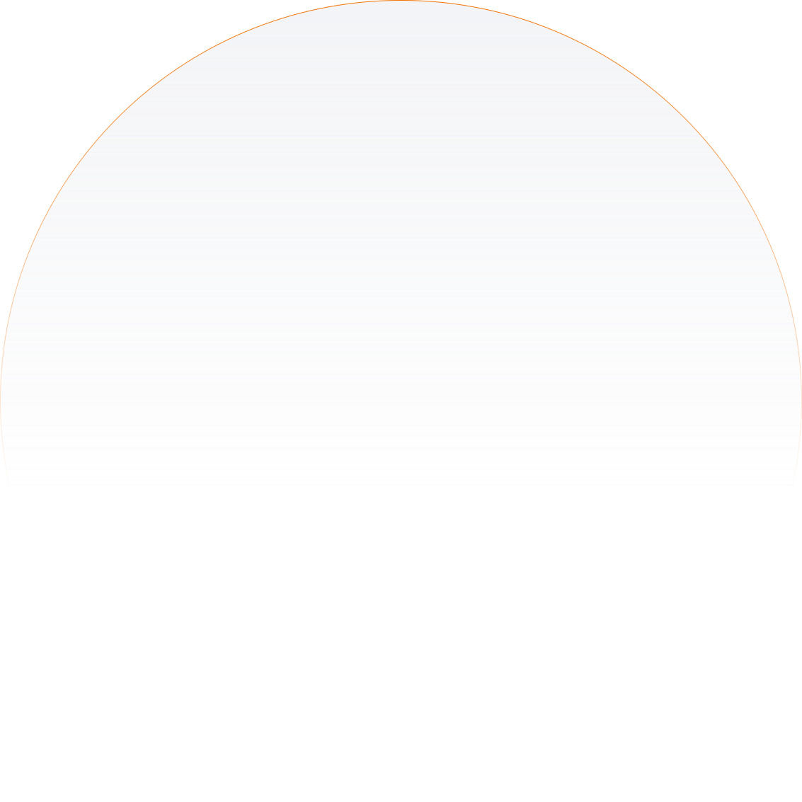
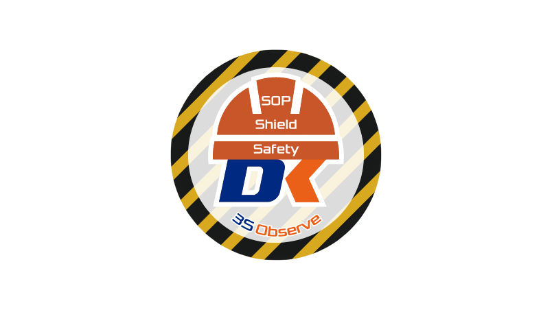
3S Observe
SOP
작업표준 준수
Safety
안전활동 준수
Shield
안전보호구 착용 준수
안전 갤러리
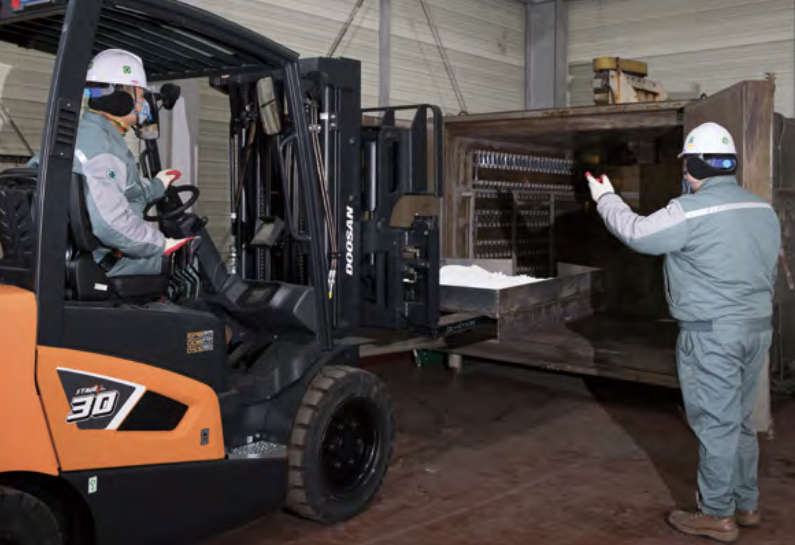
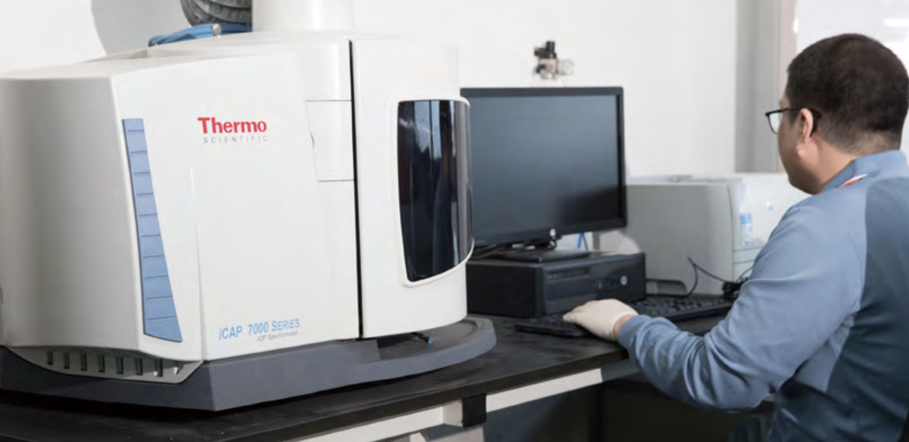
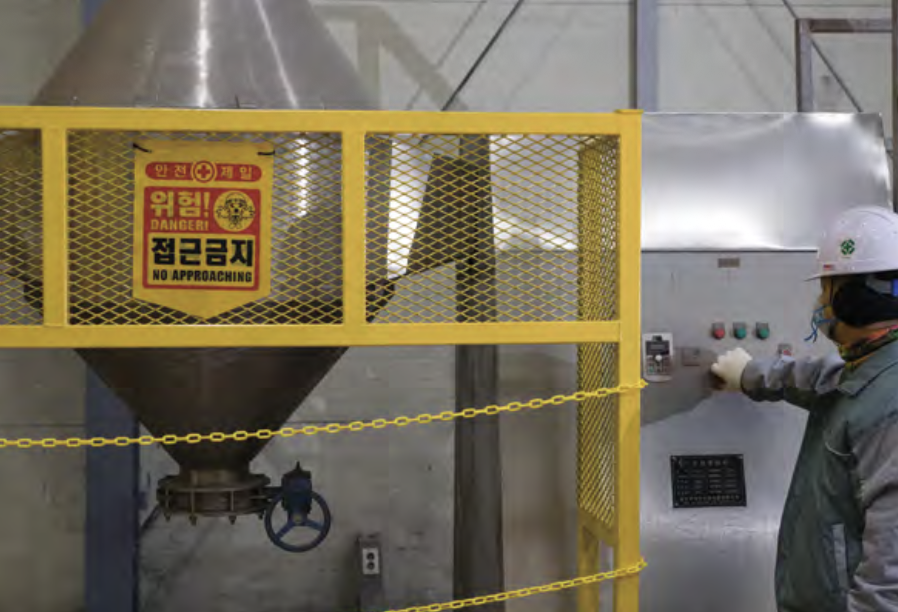
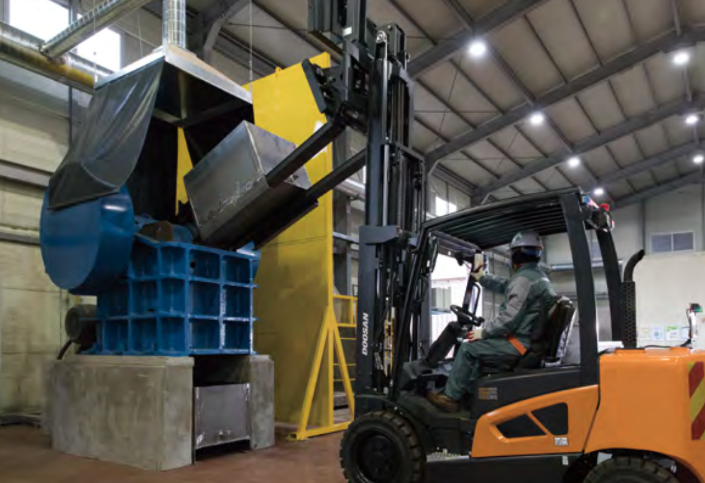
인증현황
시흥공장
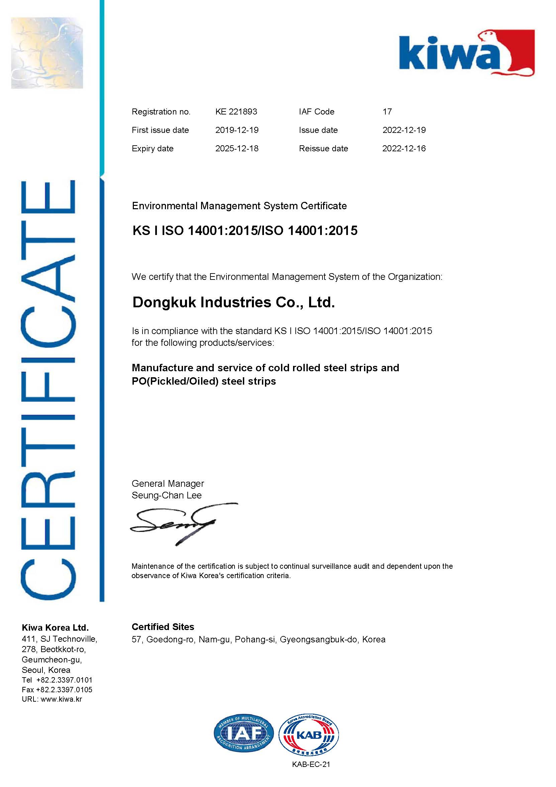
ISO 45001
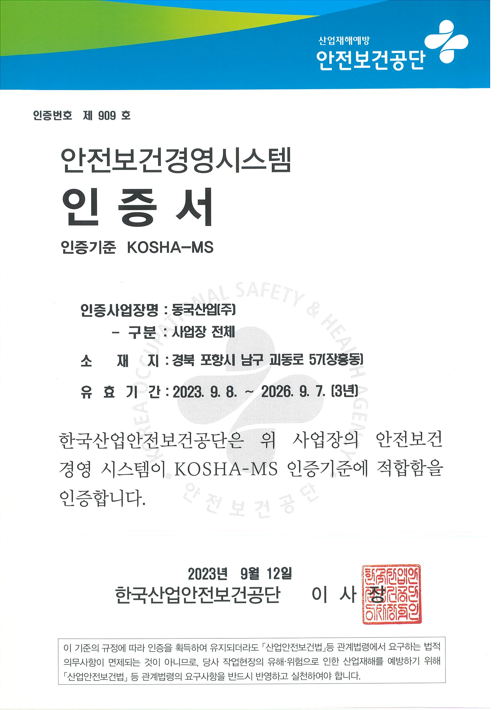
KOSHA-MS
포항공장
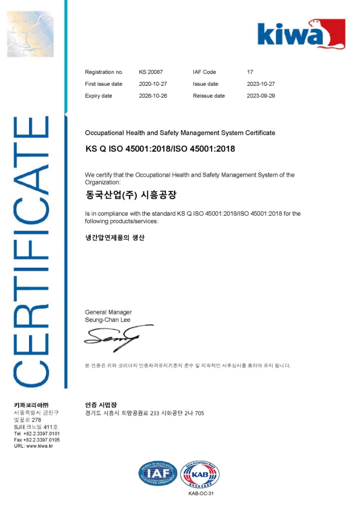
ISO 45001
KOSHA-MS